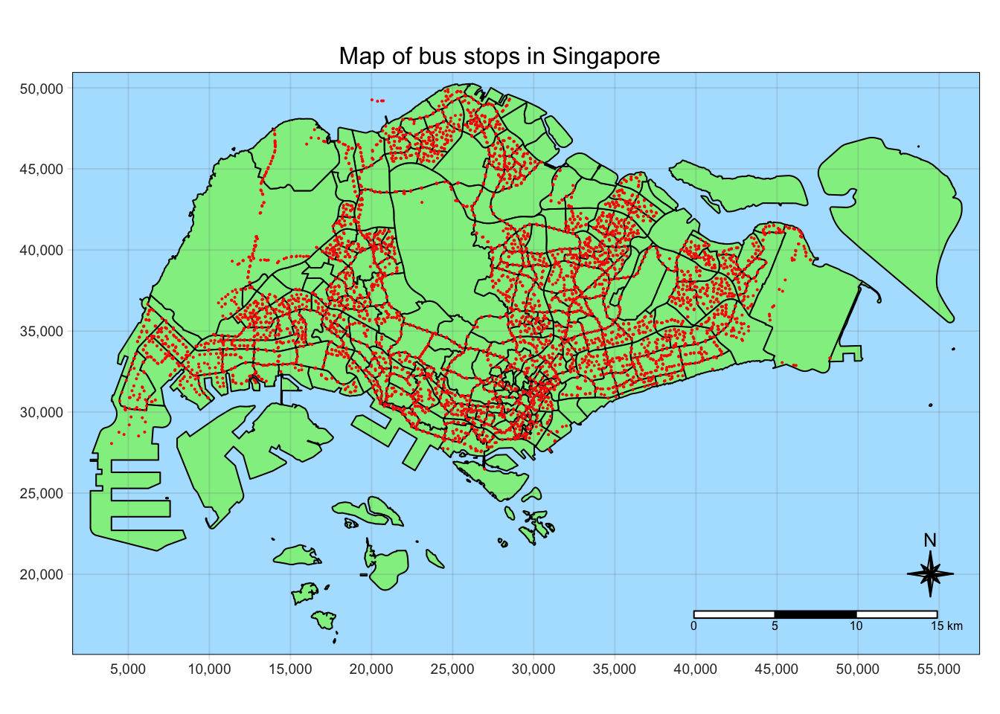
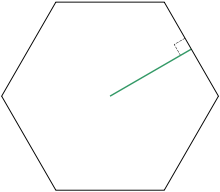
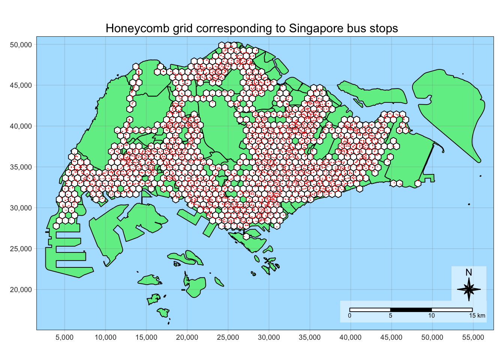
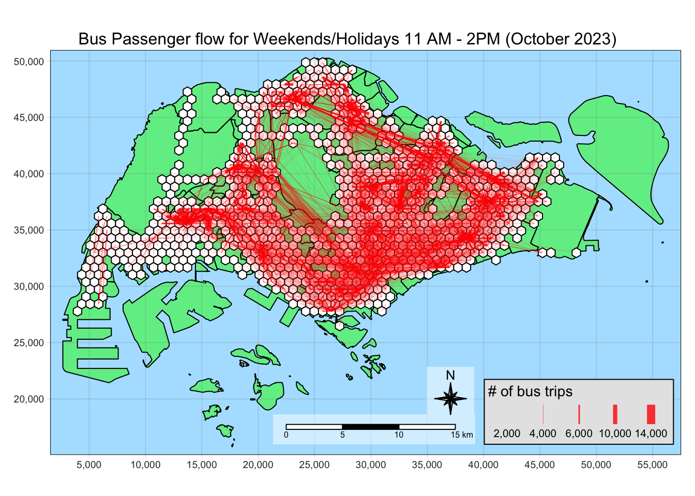
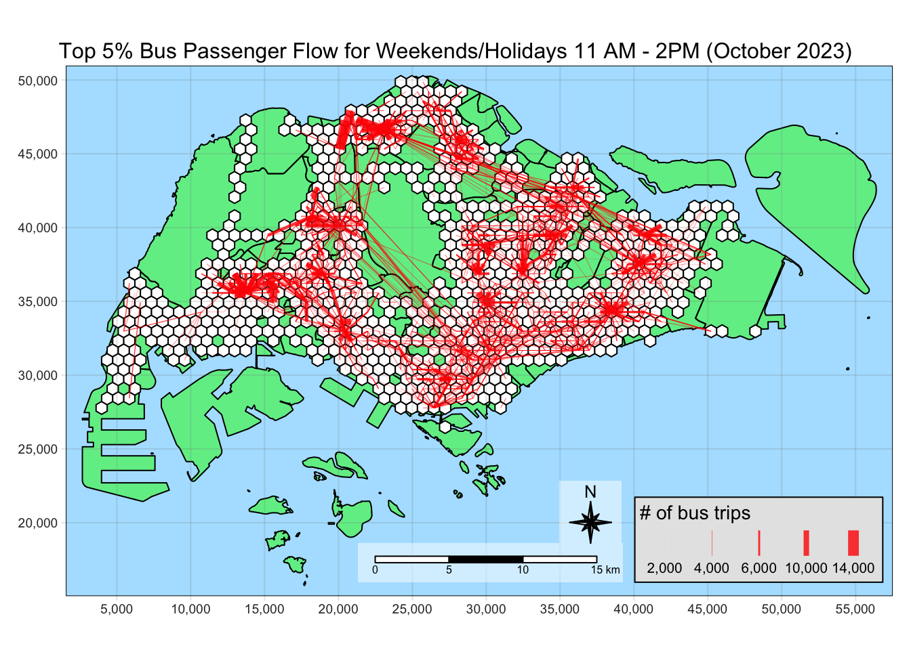

message <- "This code chunk executed"Take Home Exercise 2: A Case Study of Singapore Public Bus Commuter Flows
Overview
The aim of this exercise to study the bus commuter flow patterns in Singapore to gain insights that support decision-making.
We will be examining the weekend morning peak hours (11 AM - 2 PM) to figure out where people go during weekends and holidays.
We will also be the modelling the spatial interaction between the different locations in Singapore, related to the bus commuter patterns.
Check https://isss624-ay2023-24nov.netlify.app/take-home_ex02 for the full requirements of this exercise.
As this process is expected to have a lot of intermediate steps, Save, Load, and Data clear points are available to make our data wrangling more efficient.
Save point
This is where data is written as rds files using write_rds() for important data sets that will be used in later analysis. Examples are:
- Flow data, attractive and propulsive forces
- Critical outputs of expensive calculations
- Cleaned up data for lightweight processing
Load point
This is where data is loaded from rds files using read_rds(). They were previously generated by the save point.
TIP: Skip to the load points to progress without running the code above it
Data clear point
This is where data that will not be used anymore are cleared. The data in RStudio environment will pile up and set #| eval: false in code chunks if you want skip the clearing. For example, the code below won’t be run.
Setup
pacman::p_load(sf, sp, tmap, tidyverse, knitr, sfdep, stplanr, reshape2)
tmap_mode("plot")
tmap_style("natural")
set.seed(1234)Data Wrangling
Importing the Singapore subzone map
First, we will import the Master Plan 2019 Subzone Boundary (Web) data set that has been used in class. We will only keep the SUBZONE_N column and the geometry as we will only use this as the base for our visualizations.
mpsz <- st_read(dsn = "data/geospatial",
layer = "MPSZ-2019") %>%
select(SUBZONE_N)Reading layer `MPSZ-2019' from data source
`/Users/kjcpaas/Documents/Grad School/ISSS624/Project/ISSS624/Take-home_Ex2/data/geospatial'
using driver `ESRI Shapefile'
Simple feature collection with 332 features and 6 fields
Geometry type: MULTIPOLYGON
Dimension: XY
Bounding box: xmin: 103.6057 ymin: 1.158699 xmax: 104.0885 ymax: 1.470775
Geodetic CRS: WGS 84kable(head(mpsz))| SUBZONE_N | geometry |
|---|---|
| MARINA EAST | MULTIPOLYGON (((103.8802 1…. |
| INSTITUTION HILL | MULTIPOLYGON (((103.8376 1…. |
| ROBERTSON QUAY | MULTIPOLYGON (((103.8341 1…. |
| JURONG ISLAND AND BUKOM | MULTIPOLYGON (((103.7125 1…. |
| FORT CANNING | MULTIPOLYGON (((103.8472 1…. |
| MARINA EAST (MP) | MULTIPOLYGON (((103.8987 1…. |
Correcting the projection
Save point
Let’s save this geometry with corrected projection from plotting purposes.
write_rds(mpsz, "data/rds/mpsz.rds")Generating Hexagons for the Traffic Analysis Zone
To start our analysis, we will first build the honeycomb grid needed for our traffic analysis zone (TAZ). These hexagons must have a distance of 375m from the center of the hexagon to the midpoint of each edge.
Import Bus Stop Data
Next, we need to import the bus stop data as we will generate the honeycomb grid based on locations with bus stops.
busstops <- st_read(dsn = "data/geospatial",
layer = "BusStop")Reading layer `BusStop' from data source
`/Users/kjcpaas/Documents/Grad School/ISSS624/Project/ISSS624/Take-home_Ex2/data/geospatial'
using driver `ESRI Shapefile'
Simple feature collection with 5161 features and 3 fields
Geometry type: POINT
Dimension: XY
Bounding box: xmin: 3970.122 ymin: 26482.1 xmax: 48284.56 ymax: 52983.82
Projected CRS: SVY21kable(head(busstops))| BUS_STOP_N | BUS_ROOF_N | LOC_DESC | geometry |
|---|---|---|---|
| 22069 | B06 | OPP CEVA LOGISTICS | POINT (13576.31 32883.65) |
| 32071 | B23 | AFT TRACK 13 | POINT (13228.59 44206.38) |
| 44331 | B01 | BLK 239 | POINT (21045.1 40242.08) |
| 96081 | B05 | GRACE INDEPENDENT CH | POINT (41603.76 35413.11) |
| 11561 | B05 | BLK 166 | POINT (24568.74 30391.85) |
| 66191 | B03 | AFT CORFE PL | POINT (30951.58 38079.61) |
Correcting the projection
We want to use SVY21 as the projection for this study as it is the projection used for local Singaporean context.
After the import, it shows that the Projected CRSis SVY21. However, checking the CRS with st_crs() tells a different story.
st_crs(busstops)Coordinate Reference System:
User input: SVY21
wkt:
PROJCRS["SVY21",
BASEGEOGCRS["WGS 84",
DATUM["World Geodetic System 1984",
ELLIPSOID["WGS 84",6378137,298.257223563,
LENGTHUNIT["metre",1]],
ID["EPSG",6326]],
PRIMEM["Greenwich",0,
ANGLEUNIT["Degree",0.0174532925199433]]],
CONVERSION["unnamed",
METHOD["Transverse Mercator",
ID["EPSG",9807]],
PARAMETER["Latitude of natural origin",1.36666666666667,
ANGLEUNIT["Degree",0.0174532925199433],
ID["EPSG",8801]],
PARAMETER["Longitude of natural origin",103.833333333333,
ANGLEUNIT["Degree",0.0174532925199433],
ID["EPSG",8802]],
PARAMETER["Scale factor at natural origin",1,
SCALEUNIT["unity",1],
ID["EPSG",8805]],
PARAMETER["False easting",28001.642,
LENGTHUNIT["metre",1],
ID["EPSG",8806]],
PARAMETER["False northing",38744.572,
LENGTHUNIT["metre",1],
ID["EPSG",8807]]],
CS[Cartesian,2],
AXIS["(E)",east,
ORDER[1],
LENGTHUNIT["metre",1,
ID["EPSG",9001]]],
AXIS["(N)",north,
ORDER[2],
LENGTHUNIT["metre",1,
ID["EPSG",9001]]]]As we can see EPSG value is 9001, which correspond to WGS84. We have to fix the projection by transforming to EPSG value of 3414, which corresponds to SVY21.
busstops <- st_transform(busstops, crs = 3414)Show the code
tm_shape(mpsz) +
tm_polygons("lightgreen", title = "Singapore Boundary") +
tm_layout(main.title = "Map of bus stops in Singapore",
main.title.position = "center",
main.title.size = 1.0,
legend.height = 0.35,
legend.width = 0.35,
frame = TRUE) +
tm_shape(busstops) +
tm_dots(col = "red", size = 0.005, title = "Bus Stops") +
tm_compass(type="8star", size = 2) +
tm_scale_bar() +
tm_grid(alpha = 0.2)
busstops <- busstops %>% st_intersection(mpsz) %>% select(BUS_STOP_N, )Show the code
tmap_style("natural")
tm_shape(mpsz) +
tm_polygons("lightgreen", title = "Singapore Boundary") +
tm_layout(main.title = "Map of bus stops in Singapore",
main.title.position = "center",
main.title.size = 1.0,
legend.height = 0.35,
legend.width = 0.35,
frame = TRUE) +
tm_shape(busstops) +
tm_dots(col = "red", size = 0.005, title = "Bus Stops") +
tm_compass(type="8star", size = 2) +
tm_scale_bar() +
tm_grid(alpha = 0.2)
Removing the bus stops outside Singapore
The map shows that there are bus stops in our data set that are outside Singapore bounds (green area). We can remove these points from our busstops data by using st_intersection().
We will use this as busstops contains points, the intersection of the 2 geometries will generate points corresponding to the bus stops within Singapore.
We will also just retain the BUS_STOP_N to remove the columns we do not need.
busstops <- busstops %>% st_intersection(mpsz) %>% select(BUS_STOP_N, )Visualizing again, all the bus stops are now within Singapore.
Show the code
tmap_style("natural")
tm_shape(mpsz) +
tm_polygons("lightgreen", title = "Singapore Boundary") +
tm_layout(main.title = "Map of bus stops in Singapore",
main.title.position = "center",
main.title.size = 1.0,
legend.height = 0.35,
legend.width = 0.35,
frame = TRUE) +
tm_shape(busstops) +
tm_dots(col = "red", size = 0.005, title = "Bus Stops") +
tm_compass(type="8star", size = 2) +
tm_scale_bar() +
tm_grid(alpha = 0.2)Creating the honeycomb grid
Finally, we can generate the honeycomb grid using st_make_grid(), providing cellsize of 750m.
Calculating cellsize
Apothem is defined as the perpendicular from the center of a regular polygon to one of the sides.
The specification is this study requires hexagons to be 375 m from the center of the hexagon to the center of one of it’s edge.

As such, this corresponds to the length of 2 opposite apothems, which is 750 m.
The edge length is not the same as apothem. It is 433.013 mm.
\[ 375m/cos(30) = 433.013m \]
honeycomb <- busstops %>% st_make_grid(cellsize = 750,
what="polygons",
square = FALSE) %>%
st_sf() %>%
filter(lengths(st_intersects(geometry, busstops)) > 0)
Code Explanation
- st_make_grid()
-
Creates a grid that covers the entire bus stop geometry, including areas without bus stop.
- st_sf()
-
Converts to simple feature data set
- st_intersects()
-
Checks if the hexagons have bus stops
- filter()
-
Removes hexagons without bus stops
Let’s plot the map to visually inspect if the hexagons cover all the bus stop locations.
Show the code
tm_shape(mpsz) +
tm_polygons("green", title = "Singapore Boundary", alpha = 0.5) +
tm_shape(honeycomb) +
tm_polygons(col = "white", title = "Hexagons", alpha = 1) +
tm_layout(main.title = "Honeycomb grid corresponding to Singapore bus stops",
main.title.position = "center",
main.title.size = 1.0,
legend.height = 0.35,
legend.width = 0.35,
frame = TRUE) +
tm_compass(type="8star", size = 2, bg.color = "white", bg.alpha = 0.5) +
tm_scale_bar(bg.color = "white", bg.alpha = 0.5) +
tm_shape(busstops) +
tm_dots(col = "red", size = 0.001, title = "Bus Stops") +
tm_grid(alpha = 0.2)
Assigning id to each hexagon
Now that we have hexagons properly generated, we will assign id for each hexagon to be used as a unique identifier. We will store this id under the HEX_ID column, and can be used in joining data frames.
honeycomb$HEX_ID <- sprintf("H%04d", seq_len(nrow(honeycomb))) %>% as.factor()
kable(head(honeycomb))| geometry | HEX_ID |
|---|---|
| POLYGON ((3970.122 27348.13… | H0001 |
| POLYGON ((4345.122 27997.65… | H0002 |
| POLYGON ((4345.122 30595.72… | H0003 |
| POLYGON ((4720.122 28647.16… | H0004 |
| POLYGON ((4720.122 29946.2,… | H0005 |
| POLYGON ((4720.122 31245.24… | H0006 |
Save point
Let’s save honeycomb as it contains the main geometry we will use in analysis.
write_rds(honeycomb, "data/rds/honeycomb_basic.rds")Extracting hexagon-based bus commuter data
Next, we will extract the bus commuter data going from 1 hexagon to another.
Importing the bus commuter data
We will use the Passenger Volume By Origin Destination Bus Stops from LTA DataMall via API for the months of October 2023.
The data set is an aspatial data in csv format so we will use read_csv() to import the data.
odbus <- read_csv("data/aspatial/origin_destination_bus_202310.csv")
kable(head(odbus))| YEAR_MONTH | DAY_TYPE | TIME_PER_HOUR | PT_TYPE | ORIGIN_PT_CODE | DESTINATION_PT_CODE | TOTAL_TRIPS |
|---|---|---|---|---|---|---|
| 2023-10 | WEEKENDS/HOLIDAY | 16 | BUS | 04168 | 10051 | 3 |
| 2023-10 | WEEKDAY | 16 | BUS | 04168 | 10051 | 5 |
| 2023-10 | WEEKENDS/HOLIDAY | 14 | BUS | 80119 | 90079 | 3 |
| 2023-10 | WEEKDAY | 14 | BUS | 80119 | 90079 | 5 |
| 2023-10 | WEEKDAY | 17 | BUS | 44069 | 17229 | 4 |
| 2023-10 | WEEKENDS/HOLIDAY | 17 | BUS | 20281 | 20141 | 1 |
If you want to use data for the other months, just find and replace 202310 to your desired month in YYYYMM format.
Filtering the relevant data
We only need the data for the weekend morning peak period, which is from 11 AM - 2 PM on weekends and holidays. As such, we will filter the data for the relevant hours.
We will also rename the ORIGIN_PT_CODE and DESTINATION_PT_CODE to be consistent with the naming with busstops as these columns can be associated to busstops’s BUS_STOP_N
How to filter data by TIME_PER_HOUR
The TIME_PER_HOUR in data set covers the data from the start to the end of the hour in 24-hour format, i.e. when TIME_PER_HOUR = 16, this means bus taps from 4:00 PM ton4:59:59PM.
Hence, if we want to get 6 to 9am data, we will filter by:
TIME_PER_HOUR >= 6 & TIME_PER_HOUR < 9od_trips <- odbus %>%
filter( TIME_PER_HOUR >= 11 &
TIME_PER_HOUR < 14 &
DAY_TYPE == "WEEKENDS/HOLIDAY"
) %>%
group_by(ORIGIN_PT_CODE, DESTINATION_PT_CODE) %>%
summarise(TRIPS = sum(TOTAL_TRIPS)) %>%
rename(
ORIG_BUS_STOP_N = ORIGIN_PT_CODE,
DEST_BUS_STOP_N = DESTINATION_PT_CODE
)
kable(head(od_trips))| ORIG_BUS_STOP_N | DEST_BUS_STOP_N | TRIPS |
|---|---|---|
| 01012 | 01112 | 204 |
| 01012 | 01113 | 129 |
| 01012 | 01121 | 95 |
| 01012 | 01211 | 91 |
| 01012 | 01311 | 152 |
| 01012 | 01559 | 5 |
Data clear point
We do not need odbus anymore as we already extracted the data relevant to our analysis.
rm(odbus)Adding hexagon information to od_trips data
Generating lookup table for bus stop to associated hexagon
To connect the trip data to the their corresponding hexagon, we need to create a lookup table. This will serve as a glue in associating the aspatial od_trips data frame to the honeycomb data frame.
This can be done via st_intersection().
bs_hex <- st_intersection(busstops, honeycomb) %>%
st_drop_geometry() %>%
select(c(BUS_STOP_N, HEX_ID))
kable(head(bs_hex))| BUS_STOP_N | HEX_ID | |
|---|---|---|
| 3269 | 25059 | H0001 |
| 2570 | 25751 | H0002 |
| 254 | 26379 | H0003 |
| 2403 | 26369 | H0003 |
| 2829 | 25741 | H0004 |
| 1715 | 26399 | H0005 |
Joining od_trips and bs_hex
Next, we need to associate each origin bus stop and destination bus stop to their corresponding hexagons.
We can use that by doing inner_join() twice, once for the origin and another for the destination.
Why inner_join() instead of left_join()?
We will use inner_join as there are BUS_STOP_N values in od_trips data that are not in bs_hex.
c(
od_trips$ORIG_BUS_STOP_N[!(od_trips$ORIG_BUS_STOP_N %in% bs_hex$BUS_STOP_N)],
od_trips$DEST_BUS_STOP_N[!(od_trips$DEST_BUS_STOP_N %in% bs_hex$BUS_STOP_N)]
) %>% unique() %>% length()[1] 59There are 59 bus stops in od_trips that are not in bs_hex. 5 of these can be attributed the bus stops we removed due to them being out in Singapore. Others may be due to the BusStops data set not having complete information.
The proper way to handle this is to validate the existence of each of these bus stops and look at public sources (e.g. Google Maps, LTA data) and add coordinate data. However, as we do not have much to do this task, we have to remove these bus stops from our analysis as we do not have geospatial data to associate to the hexagons from the data sets available to us.
Therefore, we will use inner_join to keep only the observations in trips with the matching bus stops in bs_hex.
od_trips <- od_trips %>%
inner_join(bs_hex,
by = c("ORIG_BUS_STOP_N" = "BUS_STOP_N")) %>%
rename(ORIG_HEX_ID = HEX_ID)od_trips <- od_trips %>%
inner_join(bs_hex,
by = c("DEST_BUS_STOP_N" = "BUS_STOP_N")) %>%
rename(DEST_HEX_ID = HEX_ID)Aggregating data by hexagon
Similar to Filtering the relevant data, we will perform aggregations by ORIG_HEX_ID and DEST_HEX_ID to have an aggregated sum of trips by hexagon instead of bus stops.
od_hex <- od_trips %>%
group_by(ORIG_HEX_ID, DEST_HEX_ID) %>%
summarise(TRIPS = sum(TRIPS))
kable(head(od_hex))| ORIG_HEX_ID | DEST_HEX_ID | TRIPS |
|---|---|---|
| H0002 | H0016 | 1 |
| H0002 | H0017 | 2 |
| H0002 | H0032 | 16 |
| H0003 | H0005 | 1 |
| H0003 | H0022 | 56 |
| H0003 | H0028 | 10 |
Save point
Let’s save od_hex as it contains the data needed to visualize flow data. Take note that this includes intra-zonal trips.
write_rds(od_hex, "data/rds/od_hex202310.rds")
Data clear point
We do not need busstops, bs_hex, od_trips anymore as we already have the necessary data for doing hexagon-based analysis in od_hex.
rm(busstops)
rm(bs_hex)
rm(od_trips)Origin-Destination Flows
Load point
We can run the rest of the document from this point by loading these data.
mpsz <- read_rds("data/rds/mpsz.rds")
honeycomb <- read_rds("data/rds/honeycomb_basic.rds")
od_hex <- read_rds("data/rds/od_hex202310.rds")The next part focuses on visualizing the bus commuter flows, figuring the potential propulsive and attractiveness variables.
Generating the flow lines
First, we will generate the flow lines using od2line(). honeycomb will be supplied as the zone as it contains the hexagons we are using as the traffic analysis zones.
flowlines <- od_hex %>% od2line(
honeycomb,
zone_code = "HEX_ID")Initial inspection of the flow lines
Next, we will do an initial inspection of the flow lines to check if they have been generated correctly.
Show the code
tm_shape(mpsz) +
tm_polygons("green", title = "Singapore Boundary", alpha = 0.5) +
tm_shape(honeycomb) +
tm_polygons(col = "white", title = "Hexagons", alpha = 1) +
tm_shape(flowlines) +
tm_lines(lwd = "TRIPS",
style = "quantile",
scale = c(0.1, 1, 3, 5, 7, 10),
title.lwd = "# of bus trips",
n = 6,
alpha = 0.8) +
tm_layout(main.title = "Bus Passenger flow for Weekends/Holidays 11 AM - 2PM (October 2023)",
main.title.position = "center",
main.title.size = 1.0,
legend.height = 0.35,
legend.width = 0.35,
frame = TRUE) +
tm_compass(type="8star", size = 2, bg.color = "white", bg.alpha = 0.5) +
tm_scale_bar(bg.color = "white", bg.alpha = 0.5) +
tm_grid(alpha = 0.2)
Insights
The flow lines are sparse at the West side of Singapore, the Jurong and Choa Chu Kang areas. This is consistent with the observations that we have in the Take-home Exercise 1.
The busiest zones can be seen in this visualization as the zones where the lines converge. However, it is hard to see more closely in this web of lines we need a different visualization to inspect the busiest bus flows.
Visualizing the busiest flows
To visualize the busiest flows, we have to reduce the dataset into the most useful ones by:
Removing the intra-zonal flows, which may have come from passengers riding until the next stop only
Visualizing only the busiest flows
Helper function for removing intra-zonal data
To help in processing just the inter-zonal flows, we will create a helper function to remove the intra-zonal data. We only need to check if ORIG_HEX_ID is the same as DEST_HEX_ID.
This function uses filter() to remove the rows that do not satisfy the above condition.
remove_intra <- function(df) {
df %>% filter(
ORIG_HEX_ID != DEST_HEX_ID
)
}Determining the cut-off value for TRIPS
To identify the cut-off for our visualization, we will use summary() to check the distribution of the data
remove_intra(flowlines)$TRIPS %>% summary() Min. 1st Qu. Median Mean 3rd Qu. Max.
1.00 3.00 12.00 92.74 46.00 12377.00 As can be seen in the summary, the 3rd quartile is still very low compared to the visualization values in the flow line, which starts as 2000.
Let’s look at the distribution at from quantile() to find an appropriate cut-off value.
remove_intra(flowlines)$TRIPS %>%
quantile(probs = c(0.8, 0.9, 0.95, 0.99, 0.995, 0.999)) 80% 90% 95% 99% 99.5% 99.9%
66.000 171.000 376.250 1510.000 2422.625 5295.350 Visualizing the top 5% busiest flows
We will use the value for the 95th percentile as it removes much of the low traffic so we can see patterns. At the same time, it leaves enough so that important details are not lost.
Show the code
tm_shape(mpsz) +
tm_polygons("green", title = "Singapore Boundary", alpha = 0.5) +
tm_shape(honeycomb) +
tm_polygons(col = "white", title = "Hexagons", alpha = 1) +
tm_shape(
flowlines %>%
remove_intra() %>%
filter(TRIPS > 376)) +
tm_lines(lwd = "TRIPS",
style = "quantile",
scale = c(0.1, 1, 3, 5, 7, 10),
title.lwd = "# of bus trips",
n = 6,
alpha = 0.8) +
tm_layout(main.title = "Top 5% Bus Passenger Flow for Weekends/Holidays 11 AM - 2PM (October 2023)",
main.title.position = "center",
main.title.size = 1.0,
legend.height = 0.35,
legend.width = 0.35,
frame = TRUE) +
tm_compass(type="8star", size = 2, bg.color = "white", bg.alpha = 0.5) +
tm_scale_bar(bg.color = "white", bg.alpha = 0.5) +
tm_grid(alpha = 0.2)
Insights
It is notable that the thickest flow lines are for relatively short distances, like the bus rides to and from Woodlands Checkpoint to Kranji Station. We should consider the existence of train stations as attractive or propulsive variables. This can also be observed in some residential areas like Jurong East or Woodlands.
Also, there are longer bus rides for the weekend peak, probably indicating people more willing to travel longer distances for recreation and meeting family and friends.